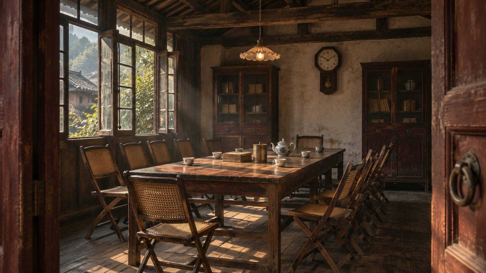

1935 年 5 月四川 · 泸定
走到大渡河边，看铁索如何把两岸的人连在一起。

石桥台托起两岸桥亭。九根底链与四根扶手链横跨大渡河。桥板保留范围为复原示意。
毛泽东视角 · 八站独白
行记员手记 · 19 处历史坐标
长征纪念图集
序章的三幅场景影像为原创艺术复原，环境声为合成声景。进入现场后，可以自由环看三维地景，沿实物线索对照史料。
行记员是图集的虚构研学向导。她以一本系着红扣带的行记本串起各站观察、提问与史料。
《在山河间作决定》以毛泽东和中共中央在长征中的抉择串联 1934 至 1935 年的中央红军行程，再从各路红军的视角讲述 1936 年会宁、将台堡会师。各站同时关注围堵、地形和群众支援。
全线总览把现代卫星影像铺在高程地形上，山脊与河谷随镜头转动显出起伏。河流中心线来自 Natural Earth，线宽和远景地标经过放大，红线连接行程代表点。节点中的历史地景以原创俯视复原图表现地表。选择“地形实景”可对照现代的卫星影像。
铁索数量、桥长桥宽、两岸石桥台及桥亭形制依据泸定县资料。夺桥前桥板大部拆除的描述来自国防部报道。近景使用现测地形，岸边植被、桥头石径、桥亭构件与残留桥板位置按示意呈现。
历史地景取材于旧址记载、地方志和纪念馆资料。树干、枝叶、河面、街巷与建筑均有独立几何结构。树库采用原创常绿阔叶、垂柳、针叶与竹丛模型，随观察距离切换细节。每站的“史事现场”可查看用于建模的原创构图手稿；人物位置、村落布局、光照与陈设属情境演绎。
请启用 JavaScript 以使用三维地形和节点档案。